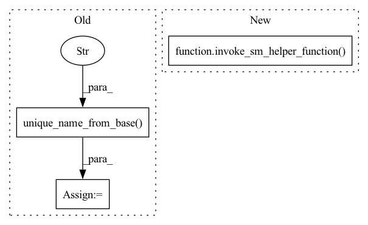

Pattern ID :21516

Before Change
image_uri=ecr_image,
sagemaker_session=sagemaker_session)
endpoint_name = utils.unique_name_from_base("test-mxnet-serving")
with timeout.timeout_and_delete_endpoint_by_name(endpoint_name, sagemaker_session):
predictor = model.deploy(1, instance_type, endpoint_name=endpoint_name)
output = predictor.predict([[1, 2]])
After Change
@pytest.mark.model("linear_regression")
@pytest.mark.skip_neuron_containers
def test_hosting(ecr_image, sagemaker_regions, instance_type, framework_version):
invoke_sm_helper_function(ecr_image, sagemaker_regions, _test_hosting_function,
instance_type, framework_version)
def _test_hosting_function(ecr_image, sagemaker_session, instance_type, framework_version):
prefix = "mxnet-serving/default-handlers"
In pattern: SUPERPATTERN
Frequency: 4
Non-data size: 3
Instances
Fragment ID: 68829790
Project Name: aws/deep-learning-containers
Commit Name: 6e6f05c2bcaee3f8d5469eafb57ca3e6e820ac4a
Time: 2021-10-19
Author: 34056697+SergTogul@users.noreply.github.com
File Name: test/sagemaker_tests/mxnet/inference/integration/sagemaker/test_hosting.py
M Class Name: AnonimousClass
N Class Name: AnonimousClass
M Method Name: test_hosting(4)
N Method Name: test_hosting(4)
M Parent Class:
N Parent Class:
M File Name: test/sagemaker_tests/mxnet/inference/integration/sagemaker/test_hosting.py
N File Name: test/sagemaker_tests/mxnet/inference/integration/sagemaker/test_hosting.py
M Start Line: 33
M End Line: 48
N Start Line: 34
N End Line: 36
'>
Before Change
if image_framework_version == "1.5.1":
entry_point = os.path.join(DEFAULT_HANDLER_PATH, "model", "code", "empty_module.py")
endpoint_name = utils.unique_name_from_base("test-mxnet-ei")
with timeout_and_delete_endpoint_by_name(endpoint_name=endpoint_name,
sagemaker_session=sagemaker_session,
minutes=20):
After Change
@pytest.mark.skip_if_non_supported_ei_region()
@pytest.mark.skip_if_no_accelerator()
def test_elastic_inference(ecr_image, sagemaker_regions, instance_type, accelerator_type, framework_version):
invoke_sm_helper_function(ecr_image, sagemaker_regions, _test_elastic_inference_function,
instance_type, accelerator_type, framework_version)
def _test_elastic_inference_function(ecr_image, sagemaker_session, instance_type, accelerator_type, framework_version):
entry_point = DEFAULT_SCRIPT_PATH
'>
Fragment ID: 68829788
Project Name: aws/deep-learning-containers
Commit Name: 6e6f05c2bcaee3f8d5469eafb57ca3e6e820ac4a
Time: 2021-10-19
Author: 34056697+SergTogul@users.noreply.github.com
File Name: test/sagemaker_tests/mxnet/inference/integration/sagemaker/test_elastic_inference.py
M Class Name: AnonimousClass
N Class Name: AnonimousClass
M Method Name: test_elastic_inference(5)
N Method Name: test_elastic_inference(5)
M Parent Class:
N Parent Class:
M File Name: test/sagemaker_tests/mxnet/inference/integration/sagemaker/test_elastic_inference.py
N File Name: test/sagemaker_tests/mxnet/inference/integration/sagemaker/test_elastic_inference.py
M Start Line: 51
M End Line: 76
N Start Line: 51
N End Line: 52
'>
Before Change
with timeout.timeout_and_delete_model_with_transformer(transformer, sagemaker_session, minutes=20):
input_data = sagemaker_session.upload_data(path=DATA_PATH, key_prefix=s3_prefix)
job_name = utils.unique_name_from_base("test-mxnet-serving-batch")
transformer.transform(input_data, content_type="text/csv", job_name=job_name)
transformer.wait()
prediction = _transform_result(sagemaker_session.boto_session, transformer.output_path)
After Change
@pytest.mark.model("mnist")
@pytest.mark.skip_neuron_containers
def test_batch_transform(ecr_image, sagemaker_regions, instance_type, framework_version):
invoke_sm_helper_function(ecr_image, sagemaker_regions, _test_batch_transform_function,
instance_type, framework_version)
def _test_batch_transform_function(ecr_image, sagemaker_session, instance_type, framework_version):
s3_prefix = "mxnet-serving/mnist"
'>
Fragment ID: 68829794
Project Name: aws/deep-learning-containers
Commit Name: 6e6f05c2bcaee3f8d5469eafb57ca3e6e820ac4a
Time: 2021-10-19
Author: 34056697+SergTogul@users.noreply.github.com
File Name: test/sagemaker_tests/mxnet/inference/integration/sagemaker/test_batch_transform.py
M Class Name: AnonimousClass
N Class Name: AnonimousClass
M Method Name: test_batch_transform(4)
N Method Name: test_batch_transform(4)
M Parent Class:
N Parent Class:
M File Name: test/sagemaker_tests/mxnet/inference/integration/sagemaker/test_batch_transform.py
N File Name: test/sagemaker_tests/mxnet/inference/integration/sagemaker/test_batch_transform.py
M Start Line: 39
M End Line: 58
N Start Line: 40
N End Line: 42
'>
Before Change
framework_version=framework_version,
sagemaker_session=sagemaker_session)
endpoint_name = utils.unique_name_from_base("test-mxnet-gluonnlp")
with timeout.timeout_and_delete_endpoint_by_name(endpoint_name, sagemaker_session):
predictor = model.deploy(1, instance_type, endpoint_name=endpoint_name)
output = predictor.predict(["Positive sentiment", "Negative sentiment"])
After Change
@pytest.mark.skip_eia_containers
@pytest.mark.skip_neuron_containers
def test_gluonnlp(ecr_image, sagemaker_regions, instance_type, framework_version):
invoke_sm_helper_function(ecr_image, sagemaker_regions, _test_gluonnlp_function,
instance_type, framework_version)
def _test_gluonnlp_function(ecr_image, sagemaker_session, instance_type, framework_version):
import urllib.request
'>
Fragment ID: 68829797
Project Name: aws/deep-learning-containers
Commit Name: 6e6f05c2bcaee3f8d5469eafb57ca3e6e820ac4a
Time: 2021-10-19
Author: 34056697+SergTogul@users.noreply.github.com
File Name: test/sagemaker_tests/mxnet/inference/integration/sagemaker/test_gluonnlp.py
M Class Name: AnonimousClass
N Class Name: AnonimousClass
M Method Name: test_gluonnlp(4)
N Method Name: test_gluonnlp(4)
M Parent Class:
N Parent Class:
M File Name: test/sagemaker_tests/mxnet/inference/integration/sagemaker/test_gluonnlp.py
N File Name: test/sagemaker_tests/mxnet/inference/integration/sagemaker/test_gluonnlp.py
M Start Line: 34
M End Line: 56
N Start Line: 35
N End Line: 37